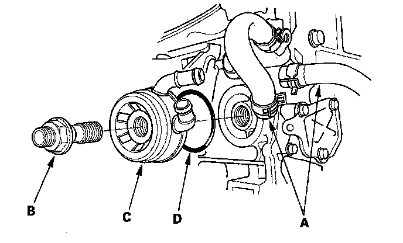

Oil Cooler: Service and Repair
Oil Cooler Replacement1. Remove the oil filter.
2. Remove the oil cooler bypass hoses (A) and oil cooler center bolt (B), then remove the oil cooler (C).

3. Install the oil cooler using a new O-ring (D). Tighten the oil cooler center bolt to 74 N-m (7.5 kgf-m, 54 lbf-ft).
4. Install the oil filter.